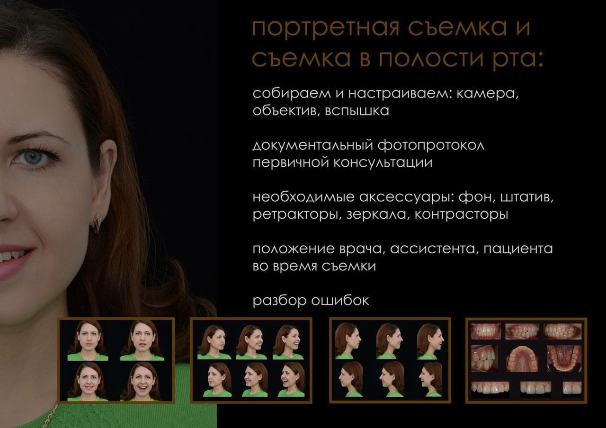
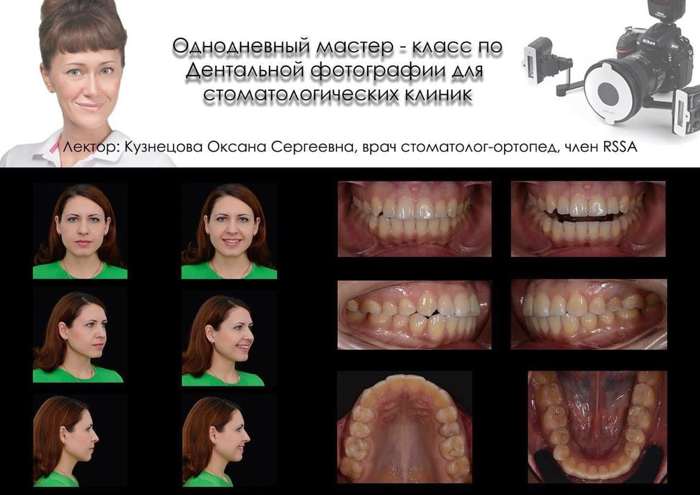

DENTAL PHOTO COACH
курсы по Дентальной фотографии
Лектор - Кузнецова Оксана Сергеевна
Член Российской Ассоциации врачей стомотологов и зубных техников - RSSA.
Автор инновационного трёхмодульного курса по дентальной фотографии “Просто о сложном”
Стаж преподавательской деятельности 7 лет.
УЧЕБНЫМ ЦЕНТРАМ:
Двухдневный, расширенный по всем тематикам курс
( первый день - теория которая закроет все вопросы связанные с дентальной фотографией, второй день - практика ).
Или однодневный курс с углубленным изучением одного модуля на выбор:
Модуль 1 - Базовый.
Модуль 2 - Коммуникация с Зуботехнической Лабораторией. Анализ и передача цвета.
Модуль 3 - Предметная макросъемка.
Расписание: двухдневный курс в субботу и воскресенье, однодневный курс в воскресенье с 10:00-20:00
( первый день - теория которая закроет все вопросы связанные с дентальной фотографией, второй день - практика ).
Или однодневный курс с углубленным изучением одного модуля на выбор:
Модуль 1 - Базовый.
Модуль 2 - Коммуникация с Зуботехнической Лабораторией. Анализ и передача цвета.
Модуль 3 - Предметная макросъемка.
Расписание: двухдневный курс в субботу и воскресенье, однодневный курс в воскресенье с 10:00-20:00
СТОМАТОЛОГИЧЕСКИМ КЛИНИКАМ:
Однодневный мастер-класс для врачей стоматологов и ассистентов.
На курсе разберём - настройки камеры, объектива, вспышки.
Освоим портретную и дентальную съемку. Научимся правильно фотографировать зуботехническую расцветку.
Узнаем о юридической стороне вопроса, а так же приобретем навыки постобработки и презентации фото на первичной консультации.
На курсе разберём - настройки камеры, объектива, вспышки.
Освоим портретную и дентальную съемку. Научимся правильно фотографировать зуботехническую расцветку.
Узнаем о юридической стороне вопроса, а так же приобретем навыки постобработки и презентации фото на первичной консультации.
ЗУБОТЕХНИЧЕСКИМ ЛАБОРАТОРИЯМ:
На мастер - классе : разберем оснащение и оборудование для предметной макросъемки, фотостудия в
лаборатории под ключ. Работа со светом. Зуботехнический стенд Алека Аронина для стандартизации
фото
моделей на этапе нанесения керамики. Съемка с подключённым монитором, компьютером. Постобработка
Фотошоп и Лайтрум для презентации своих работ в Соц.сетях для привлечения к сотрудничеству
ВРАЧЕЙ
ортопедов.
ИНДИВИДУАЛЬНЫЕ МАСТЕР КЛАССЫ:
Для тех кто любит индивидуальный подход с 100% КПД предлагаем выбрать Модуль под свои задачи и
приступить к практике.
Модуль 1 - Базовый.
Модуль 2 - Коммуникация с Зуботехнической Лабораторией. Анализ и передача цвета.
Модуль 3 - Предметная макросъемка.
Время проведения: Вт.Чт.Сб.Вс. c 10:00-20:00
Модуль 1 - Базовый.
Модуль 2 - Коммуникация с Зуботехнической Лабораторией. Анализ и передача цвета.
Модуль 3 - Предметная макросъемка.
Время проведения: Вт.Чт.Сб.Вс. c 10:00-20:00

